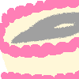
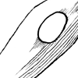
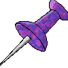
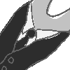

Shells
A thousand thousand dots
Download A thousand thousand dots here!
The most recent update can be found on Claw Grasshammer's site!

Birthday Needle
Download Birthday Needle here!
The most recent update can be found on Birthday Needle's page!
Carved
Download Carved here!
The most recent update can be found on Carved's page!
Close-Up View
Download Close-Up View here!
The most recent update can be found on Claw Grasshammer's site!
Colored Pencils
Download Colored Pencils here!
The most recent update can be found on Claw Grasshammer's site!
Diamond Eye
Download Diamond Eye here!
The most recent update can be found on Claw Grasshammer's site!

Eggdle
Download Eggdle here!
The most recent update can be found on Eggdle's page!
Fluffidle
Download Fluffidle here!
The most recent update can be found on Foxbane Rust's repository!
Felting Needle
Download Felting Needle here!
The most recent update can be found on ConeHeather's site!
Forbidden Galla Shell
Download Forbidden Galla Shell here!
The most recent update can be found on Forbidden Galla Shell's page!
Foil
Download Foil here!
The most recent update can be found on VITA's site!
Graphite
Download Graphite here!
The most recent update can be found on Claw Grasshammer's site!
Hands Included
Download Hands Included here!
The most recent update can be found on Foxbane Rust's repository!
Injector
Download Injector here!
The most recent update can be found on Foxbane Rust's repository!

Inkdle
Download Inkdle here!
The most recent update can be found on Claw Grasshammer's site!
Markers
Download Markers here!
The most recent update can be found on Claw Grasshammer's site!
Maybe a Tornado
Download Maybe a Tornado here!
The most recent update can be found on Claw Grasshammer's site!
Needlegon
Download Needlegon here!
The most recent update can be found on Claw Grasshammer's site!
Needy
Download Needy here!
The most recent update can be found on Lampbuyer Shout's repository!

Polished
Download Polished here!
The most recent update can be found on Polished's page!

Push Pin
Download Push Pin here!
The most recent update can be found on ROSENHEIM's blog!
Safety Needle
Download Safety Needle here!
The most recent update can be found on Claw Grasshammer's site!
Syringe
Download Syringe here!
The most recent update can be found on Claw Grasshammer's site!
Tiny Pokey Pixels
Download Tiny Pokey Pixels here!
The most recent update can be found on Claw Grasshammer's site!

Tuxeedle
Download Tuxeedle here!
The most recent update can be found on Claw Grasshammer's site!
Twemoji
Download Twemoji here!
The most recent update can be found on Claw Grasshammer's site!
Wobbly Mouse Art
Download Wobbly Mouse Art here!
The most recent update can be found on Claw Grasshammer's site!